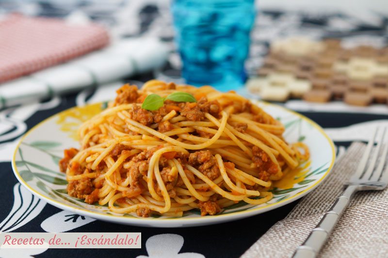
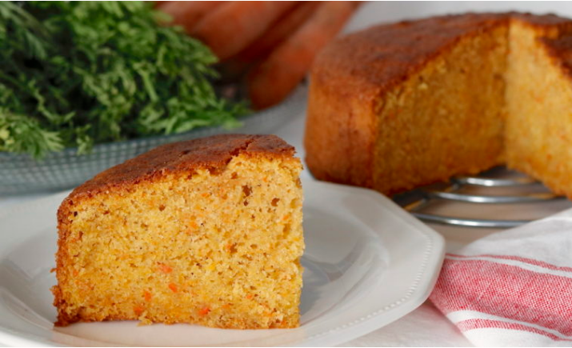

La cocina de Pepe
Aquí puedes encontrar tu selección diaria de platos recomendados.

Kebab
El kebab es un tipo de carne típico en Irán, Paquistán, Turquía y la India. Y aunque varía de un sitio al otro, todos tienen un punto en común: la carne estará picada y marinada. Su nombre proviene de los persas, los cuales empleaban este alimento para dar de comer a sus reyes, y significa “carne a la parrilla”

Placeholder
Pasta boloñesa
La salsa boloñesa tiene nació como segundo plato a base de carne y desde sus orígenes hasta su actualidad ha sufrido múltiples variaciones. Con la llegada de los romanos a tierras galas, los franceses heredaron la receta y a partir de la Edad Media la volvieron a exportar a Italia.
Poke
El poke es una ensalada de pescado crudo servida como aperitivo o plato principal en la cocina hawaiana. Las formas tradicionales son el aku y el he'e. El poke de he'e suele llamarse por su nombre japonés tako poke, excepto en lugares como la isla de Ni'ihau donde se habla la lengua hawaiana.
Pizza barbacoa
Seguro que piensas que su origen es italiano pero debo decirte que aunque ahí se inventó en el siglo XIX como la conocemos hoy en día, tiene predecesores aún más antiguos. Una versión primitiva de este plato son los «plakuntos» de origen griego, que eran unos panes planos con aceite de oliva y especias

Placeholder
Pastel de zanahoria
El pastel de zanahoria, tarta de zanahoria o torta de zanahoria es un pastel dulce con zanahoria machacada mezclada en la masa. La zanahoria se ablanda en el proceso de cocción, y la tarta suele tener una textura densa y suave. Las zanahorias mejoran el sabor, textura y apariencia del pastel.